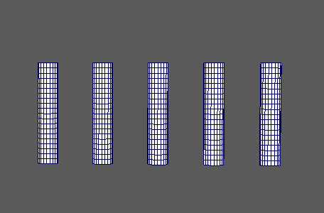
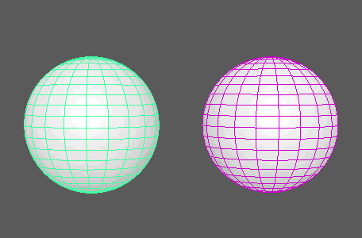

“几何体类型”(Geometry Type)设置为“网格”(Mesh)时，“时间”(Time)节点用于偏移所创建网格的组件动画（即：变形）。在这种情况下，系统会自动创建其中一个节点。
注： 这仅适用于动画组件。若要变换动画，请使用
延迟节点。
MASH 时间
-
动画开始(Animation Start)、动画结束(Animation End)
- 确定要应用于 MASH 网络中网格的输入对象动画的开始帧和结束帧。
-
交错帧(Stagger Frames)
- 确定在 MASH 网络中为下一个对象设置动画之前要等待的帧数。
-
随机交错(Random Stagger)
- 在 MASH 网络中为下一个对象设置动画之前等待随机数量的帧。启用后，“交错帧”(Stagger Frames)表示 Maya 将等待的最大帧数。
-
随机种子(Random Seed)
- 改变启用“随机交错”(Randomise Stagger)后的随机化。
-
有限循环(Limited Loops)
- 限制输入对象的动画在 MASH 网络网格上循环的次数。
-
循环数(Number of Loops)
- 确定启用“有限循环”(Limited Loops)后循环动画的次数。
-
整个帧编号(Whole Frame Numbers)
-
-
使用速度(Use Velocity)
- 使用 Waiter 提供的“速度”(Velocity)倍增。启用此选项后，对象的移动速度越快，设置动画所需的时间就越短。
-
模拟时间(Simulated Time)
- 确定如何将“时间比例”(Time Scale)应用于已设置动画的对象。
禁用后，动画时间将乘以
“时间比例”(Time Scale)。在 MASH 重现的收缩包裹示例中，
“时间比例”(Time Scale)从 1 减少为 0。请注意 MASH 生成的网格（右侧）如何减速，然后在将“时间”(Time)乘以相对输入对象（左侧）越来越小的值时反转。

启用后，“时间比例”(Time Scale)将添加到前一时间。在同一收缩包裹示例中，请注意 MASH 生成的网格（右侧）如何减速，然后在向其添加相对输入对象（左侧）越来越小的时间增量时停止。
-
模拟开始帧(Simulation Start Frame)
- 确定启用“模拟时间”(Simulated Time)后开始添加“时间比例”(Time Scale)的输入对象动画帧。
-
时间比例(Time Scale)
- 输入对象动画序列的当前“时间”(Time)倍增。用于加速、减慢甚至是反转动画。
-
随机时间比例(Random Time Scale)
-
“时间比例”(Time Scale)的随机倍增，其效果相当于逐点随机缩放动画循环长度。
-
时间偏移(Time Offset)
- 添加对象的动画帧在 MASH 网络中相对于源对象的偏移。
-
时间(Time)
- 显示当前帧。
“强度”(Strength)和“衰减”(Falloff)
-
强度模式(Strength Mode)
- 确定“强度”(Strength)影响输入动画的哪个方面。“动画帧”(Animation Frame)导致“强度”(Strength)影响将输入动画的哪个帧应用于网格（其中 0 表示动画的开头）。一旦“强度”(Strength)值大于 0，“动画触发器”(Animation Trigger)将开始为对象设置动画，并在“强度”(Strength)设置为 0 之前继续此操作。
衰减对象(Falloff Object)
-
强度(Strength)
- 同时减弱对所有点的节点效果。
-
随机强度(Random Strength)
- 按随机顺序平滑地减弱所有点的节点效果。
-
阶跃强度(Step Strength)
- 每次禁用一个点的节点效果。
-
强度贴图(Strength Map)
- 确定输入文件（2D 纹理、动画纹理等）来控制该节点的效果的形状。
-
贴图投影轴(Map Projection Axis)
- 确定投影“强度贴图”(Strength Map)时所沿的轴。
-
贴图辅助对象(Map Helper)
- 显示用于在场景中交互放置“强度贴图”(Strength Map)的对象。可以在该字段上单击鼠标右键来创建新的辅助对象（平面）（如果不存在）。还可以使用鼠标中键将网格拖入此字段，或者单击鼠标右键连接选定网格。如果网格已连接，还可以单击鼠标右键来断开其连接或者将其显示在大纲视图中。
注： 为获得最佳结果，请将相同的纹理指定给“强度贴图”(Strength Map)和“贴图辅助对象”(Map Helper)（在创建新的辅助对象时将自动执行此操作）。